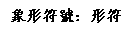
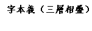
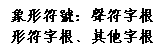
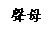
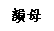
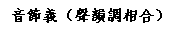

漢語音義表
徐健顺
目錄
一、說明…………………………………………………………………2
二、漢語聲調音義表……………………………………………………12
三、上古漢語聲母音義体系表…………………………………………13
四、上古漢語韻母音義体系表…………………………………………15
五、上古聲母音義表……………………………………………………16
六、上古韻部音義表……………………………………………………25
七、平水韻音義表………………………………………………………33
八、現代漢語聲母音義表………………………………………………46
說明
一、 本表是為了服務漢字教學、吟誦教學、聲韻分析和賞析表演等而編寫，不是學術研究，而是教學應用，因此特設漢語拼音擬音等內容。編者不是音韻學專業，又粗糙初創，其中必多錯誤淺陋之處，還請方家指正修改，以期改進，不勝感激。
二、 本表是傳統的聲訓學和漢語語源學的應用，是很多祖先前輩和當代學者們的研究成果的轉化。古音系統主要採用王力先生的構擬，其中編者的個人臆斷不足挂齒，然有錯謬，願承其咎。
三、 語言構音的来源，有擬聲、象似兩種方法。象似是用發音過程模擬、象徵語義的構音方法。這也是主要的構音方法。擬聲方法即直接采用自然界的声音。两种方法在音形义关系上是一致的。
四、 漢語誕生之初，先民以音表義，方可交流，故語音有涵義。語言一旦形成，在口語中語音的涵義就基本失去了作用。而詩詞文賦非口語，其與口語差異之處，正是涵義凸顯之處，此涵義正來自語源的音義。而語音流變也會造成音義的改變，所以中古以後的音義可能會與上古的音義有所差異，而與字音字形有所脫節。因此特在上古音義表之外，又作平水韻音義表以體會詩詞用韻，作普通話聲母音義表以體會普通話聲母。之所以沒有做普通話韻母音義表，是因為現代白話詩的押韻不拖長，韻的音義不顯，意義不大。
五、 這套表的製作過程，是首先按照聲韻調把字歸類排列好，然後對每一類字的上古形、義進行考察，主要是考察前輩學者對這個字的形、義的研究成果，尤其是對義的推斷，然後總結出這類字的上古字義的共同點。然後證以這類字的共同發音方式，看是否有明顯的關聯，可以從發音過程上做出解釋。最後，所有的音義關係出來以後，再整體觀察，是否形成一個整體，有無相互矛盾的地方。從目前的情況看，基本上能找到同類字的同義，並且與發音過程有明顯關聯，並且這些音義關係還是能形成一個體系的，比如，開口度和字義的開合洪細有關，送氣和力量遠近有關，發音部位和高下過程有關，舌態即輕觸、擠壓、平展、高低和性質狀態有關，等等，所以才對漢語音義關係的存在比較有信心。
六、 上古漢語可從聲母、韻母、聲調三個方面考察音義關係。
聲調：平上去入，是情緒的順序，一個比一個情緒性更強。平聲中正平和，上聲細小親密，去聲堅決明確，入聲快速決絕。
聲母：唇、舌、齒、牙、喉，這個順序的發音部位是依次後移的，發音的用力程度是依次遞加的，所以，五種聲母的涵義在用力、強調方面是依次遞加的。唇音多是動作，有開始或結束之意。b、p主要是開啟的動作，m主要是閉合的涵義。f是中古分化出來的，在唇音之後有介音i\u，所以是比較輕柔地開始之意。舌音多有明確肯定之意。快速觸及上顎的音如d、t，有打擊、碰觸的涵義。擠壓上顎的音如n有擠壓、親密、頂起的涵義。牙音是用力的意思，因為主要動用了後槽牙，那是咀嚼的工具，而且多是舌根堵塞再沖氣發音，所以多是擠壓、推舉、向上的涵義。相比而言，齒音更有聚焦、尖細、推送的涵義，因為齒是用來咬合而不是嚼碎的，而舌尖的推送感也非常突出。喉音h的發音是從底部打開沖出送氣，所以多有呼喊、打開、沖出之意。
我把唇、牙、舌、齒、喉部位的主要輔音叫做“根音”，其他的音可以看作是它衍生變化出來的。變化的方式與涵義有密切的關係。根音通過口腔的形狀和感覺表示某種狀態；其擦音則表示這種狀態出去了；其送氣音則有送出很遠、擴散出去的涵義；其濁音則有深沉、有力、低位元的涵義；其反音，即反向發聲的音（比如m就是b的反向發音）則是狀態反向的涵義（b意開始、開啟，m意結束、閉合）；其半音則是突破這個狀態的涵義，因為只剩下一半的狀態在了；其團音則表示這個狀態的收縮狀態；其尖音則表示這個狀態的精細狀態；其輕音（即後接小開口介音，如後來演化成的唇齒音）則表示這個狀態的輕柔狀態。
韻母：古人有四呼、等韻、洪細之分，與此相似，但是那是從口語的字音上來說的，所以也考慮了韻頭的因素。在詩歌中，其實更重要的是韻，是韻腹和韻尾，韻頭的時長很短，基本不會凸顯涵義，所以我在這裡做了一些角度的調整，請大家比較簡單地關注韻腹和韻尾就行。
具體來說，ɑ有開放之意，o有圓通之意，e有延伸之意，i有扁小之意，u有舒緩之意，ü有細長之意。它們的組合則是某種變化過程之意。
鼻音韻尾nɡ發音部位比較高，有時候有高位之意。所以ɑnɡ有開闊向上之意，onɡ有通透正大之意，enɡ有延伸深入之意，inɡ有細長上升之意。n發音部位比較低，有低位或平位之意，所以ɑnɡ是伸展向上，ɑn就是伸展下收或平收之意。又因為n是閉口音，因為人哭泣的時候，鼻子會堵住，說什麼字都帶n韻尾，所以反過來n韻尾也有抒情之意。“清明時節雨紛紛——”，“月落烏啼霜滿天——”，只要拖長韻尾，就能感受到抒情的韻味。
古韻母的韻尾還有[p]、[t]、[k]、[m]等，現在的普通話都沒有了。這些韻尾也各有涵義。[m]表示結束和閉合，和聲母m的涵義一樣。[p]、[t]、[k]都是發音趨勢，而非英語那樣實際發出來，這在今天的南方話和日語、朝鮮語中都還有保留。所以[p]、[t]、[k]都是堵塞住而不衝破，因此都有聚合的意思。三個音各屬於唇音、舌音、牙音，因此又各有其特色，堵塞的位置從前向後，其涵義也變得越來越有力量。它们與前面的元音結合在一起，各自表達獨特的涵義。
七、 漢語最初是以語音為核心構建起來的語言系統，以音表義，以音別義，最後形成音節的涵義。其後造文，以象形豐富語義，同音節可分成不同的聲符，以音形表義，以音形別義。再其後造字，以聲符為字根，配以不同形符，繼續豐富語義，同時同音以同義，變音以變義。如此形成了漢語漢字的精美龐大的系統，實屬世所罕見。語音核心，可以突破當下漢字教學的困境，對於兒童建立正確的語感、字感、詩感，對於重建漢語漢字的字典和教學系統，直至對於全民族恢復文化自信心都是必由之徑。
八、 漢語漢字的音形義關聯式結構如下圖所示，內圈第一層為聲韻調組合的音節義，其涵義為從聲母的涵義出發到韻母的涵義的過程，聲調是其情緒涵義，這就是初民未有文字時的漢語的音義關係。後來創造象形文字，即加上中間一層的象形符號，這些符號就是字根，其中包括聲符字根、形符字根和其他字根，這些象形符號的涵義，疊加在音節義上，即形成了字根字的字義，即語源義。再其後，加上外層的象形符號，即形符，再疊加上一層形符義，合為形聲字的字本義。形符可以加不止一層。這些本義其後還可以再演變為引申義：



漢語音形義關系結構圖
從裡圈到外圈的關係是層層疊加的關係，不是簡單的相加或交集關係，也就是外圈的涵義疊加在內圈的涵義上，外圈的涵義是對內圈涵義的一種限定、修飾，一方面把內圈涵義的範圍縮小了，一方面把整個字義的內涵豐富了，即：
漢字字義=以聲調義為情緒的——從聲母義出發——到韻母義的過程的——聲符義的——形符義。
或者：
漢字字義=形符義的——聲符義的——以聲調義為情緒的——從聲母義出發——到韻母義的過程。
同一個音節可以有不同的象形符號，表示與語音不同的涵義，疊加在音節義上，形成語源義。聲符的涵義與音節的涵義通常是不一樣的。
比如，“廾”和“公”的音節都是[kioŋ]，即中文拼音giong，音節義都是推舉向上。“廾”為上聲，情緒為細小親密，符號為雙手，所以字義為雙手恭敬地推舉向上，“公”為平聲，情緒為中正平和，符號為分私，私產分為公產，即升格為公有，所以字義為私產分眾升為公產。
再如，“今”和“金”的音節都是[kim], 即中文拼音giem，音節義都是推擠出去一點，都是平聲。“今”的符號是蓋子開啟一條縫，所以字義為蓋子打開後後推擠出去一點，或者被蓋子壓出去一點，後引申為開始。“金”的符號實際上也可以看成是“今”和“土”的會意，是“今”在“土”中，所以《說文解字》說是“象金在土中形”，所以其字義是從土中擠壓出去一點，這就是淘金的過程，也與五行土生金有關。
“金”是平聲，“唫”是去聲，聲調的改變，標示了語義在情緒上的變化。“唫”是閉口不言，噤聲的意思，顯然比“金”在情緒上更有明確堅定之意，因此改為去聲。再如“今”的聲母是[K]，而“吟”的聲母是[ŋ]。見母[K]即現代漢語拼音的ɡ，是由舌根堵塞住再打開，首先感到壓力，然後接發細音，把壓力推到舌頭和上齶處，因此多表示擠壓、細薄、推舉之意。疑母[ŋ]即現代漢語拼音的nɡ是後鼻音，因此多表示頂起、突兀、宏偉之意。[ŋ]比 [K]更有推送之感，因此“吟”改用疑母[ŋ]。
“吟”字的字根是“今”。“今”的上古聲調為平聲，聲母為見母[K]，韻母為侵部[im]。查《漢語音義表》，平聲的情緒涵義是平常。見母[K]是由舌根堵塞住再打開，首先感到壓力，然後接發細音，把壓力推到舌頭和上齶處，因此多表示擠壓、細薄、推舉之意。韻母侵部是陽聲韻，是小開口元音收於閉口m音，有壓抑感，因此多有包含、閉合、深入之意。音節義是以聲調義為情緒，從聲母義開始到韻母義的過程，即：
平常的——推擠之後——又閉合的過程。
可改寫為：推擠出去又消失。
象形符號聲符“今”（今）的涵義是蓋子打開一條縫。這個符號的涵義疊加在了音節義之上，形成了語源義：蓋子擠壓出一條縫之後又消失的過程。白川靜先生認為與祭祀有關，後即引申為開始的意思。
凡“今”的同源字都有此義，如“衿”為上衣領口，即上衣開縫處；“妗”為女子笑貌，即抿嘴而笑，或啟齒而笑；“矜”為矛柄，即矛的開始處。等等。
“吟”字是在字根的基礎上，加上了象形符號形符“口”。其聲母改為牙音疑母[ŋ]。因此其音義微調為：
平常的——頂出之後——又消失的過程。
字本義即為：口的蓋子（嘴唇）擠出一條縫之後頂出去又消失的過程。
此即“吟”的本義。其後“吟”字有低吟、吟唱等之意，為引申義。
不了解漢字的造字過程，不能從音形義一體的角度去讀取漢字信息，就會造成信息丟失。比如說，“兔”這個字，甲骨文為“兔”，篆書為“兔”，很多人見了以為這個字的意思就是“兔”這種動物的外形，《說文解字》也說：“獸名。象踞，後其尾形。”但是這樣的看法忽略了語音的涵義，實際上上古之人看到這個甲骨文，他們除了知道了這種動物的形狀特徵之外，還會得到另外一個信息，就是這種動物速度很快，難以捉摸，因為這個字的上古讀音，聲母是透母t，有沖出、打通之意，韻母是魚部a，有打開、擴展之意。如果上古也是去聲，有堅決、明確之意，合起來，就是迅速沖出去，方向不定，跑得很遠的感覺。只看字形，丟失了很多資訊。
古人在造字的時候，字形之意與字音之意往往不同，字義乃是以兩者之和為基礎的。古人在看字的時候，得到的也就是音形義一體的信息，這種讀書之法，是我們今天很難體會到的了。
九、 探究音義關係，當從語言源頭入手。本表可查常見漢字的上古音義關係。方法是從聲調音義表、上古聲母音義表、上古韻部音義表中分別查找此字的聲、韻、調的涵義，按照發音過程組合起來而探知其音義關係。
十、 古音構擬各家頗有差異，然從語音系統整體來說，各家還是大同小異。音近則義近，本表總結的是音義關係，同一個字各家構擬古音只要接近，音義關係也就接近。王力先生的系統最為簡潔，因此採用，但其他各家構音也可同理推出。各家對於上古漢語語音的整體關係結構差異不大，比如對於聲母韻部分類的差異不大，只是對音節的構擬各異，這些差異，基本上對於漢語音義關係系統的存在並不構成矛盾。比如“漢”字，李方桂先生擬為[han]，王力先生擬為[xan]，鄭張尚方先生擬為[hnaan]，三家只是在聲母的送氣程度和舌位上有差異，而[h]、[x]、[hn]三者很接近，音義也就接近。按照本表，[x]多表示呼喊、打開、推舉之意，[h]多表示強力、沖出、圍繞之意，兩者接近。[hn]本表中沒有，鄭張先生說是帶冠音的清n，本表總結[n]多表示擠壓、親昵、濃重，前加冠音送氣，也就是擠出、噴湧、伸展之意，與前兩音的涵義接近。“漢”本是漢水之名，語音的聲母表示沖出，韻母是元部，表示伸展、沉積、下收，聲調是去聲，表示堅決、明確，合起來就是沖出去堅決地伸展開，與漢水之觀感完全一致。三家雖互有差異，但都能說明漢語語音精美的音義系統。
十一、上古音構擬的重要材料之一是上古詩歌，尤其是《詩經》的押韻。然而須知為什麼漢語詩歌要押尾韻。世界上很多語言的詩歌不押韻，或不押尾韻。押韻是出於歌唱和誦讀的需要。首先歌唱需要辨音，不能倒字，才能達到讓對方聽歌的目的，而樂句結束音又多半是主音或支持音，也就是同一個音，因此聲調語言的詩歌幾乎都押調，即尾字是同一聲調，但有些不押韻。漢語詩歌的韻是包含聲調與韻母的，所以首先也是押調的。重視漢詩押韻的押調因素非常重要，由此就會關注到上古漢語聲調的音高型特徵，儘管它也有旋律型和音長型特徵。換韻如換聲調，即是換主音換宮調，情緒大變；換韻如不換聲調只換韻母，則是延續主音、宮調，情緒微調。再由此而到“四聲對五音”說的考察，或可因此通融語言、音樂、詩歌，而解開上古漢詩韻律和旋律之謎，並推知後世語音、格律、音樂演變之理。再由此而知漢詩文的讀法之重要，不可亂讀之規矩，而復興“吟誦”，重振“小學”。國學教育或可由小學而大學，溫故循正而重建。
十二、我所使用的工具書和前輩學者著作主要有《古文字詁林》（李圃）、《漢語音義字典》（齊沖天、齊小乎）、《古代漢語》（王力）、《漢字古音手冊》（郭錫良）、《新音韻學》（周祖庠）、《上古音系》（鄭張尚芳）、《常用字解》（白川靜）、《細說漢字》（左民安）等。
十三、本表編寫，得朱立俠博士後、龔昊老師的大力協助，在此深致謝意！
徐健順
2016年12月20日
漢語聲調音義表
聲 | 調 | 調型 | 音義特點 | 上古調值 | 中古調值 | 普通話聲調 | 普通話調值 |
平 | 陰平 | 低平 | 平常、中性。 | 低 | 低 | 一聲 | 高平，55。 |
陽平 | 平常、中性、低沉、有力 | 最低 | 二聲 | 高升，35。 | |||
上 | 陰上 | 前低後高，前部或平拖或下降，有一定時長。 | 細小、親密。 | 半高 | 中或高 | 三聲 | 曲折，214。 |
陽上 | 細小、親密、低沉、有力 | 四聲（全濁聲母的上聲變成去聲，清和半濁聲母的上聲仍讀三聲） | 高降，51。 | ||||
去 | 陰去 | 高降，從高處立即下降。 | 堅決、明確。 | 高 | 中或高 | ||
陽去 | 堅決、明確、低沉、有力 | ||||||
入 | 陰入 | 短促，升降平都可能。 | 決絕、快速。 | 半低 | 中或高 | 無（入聲消失，分別進入一、二、三、四聲） | 無 |
陽入 | 決絕、快速、低沉、有力 | ||||||
備註：1．“上聲高呼猛烈強”是中古以後的一種讀法，把上聲前低部分縮短或去掉即得，不是讀音之義，而是讀法之義。因此中古以後上聲韻詩詞明顯有豪放、婉約兩種風格，蓋讀法不同之故。 2．對上古聲調調值的判斷，主要來源於對“四聲對五音”之說及相關語言、音樂材料的考察。 | |||||||
![[p]](file:///C:\Users\Administrator\AppData\Roaming\Microsoft\Word\中古声母例字\中古声纽与例字1.JPG){kind=link}
![[b]](file:///D:\吟诵概论\中古声母例字\中古声纽与例字2.JPG){kind=link}
![[p‘]2](file:///C:\Users\Administrator\AppData\Roaming\Microsoft\Word\中古声母例字\中古声纽与例字2.JPG){kind=link}
![[b]](file:///F:\中华吟诵学习资料-中级（台湾行之前优化更新）\中华吟诵学习资料-声韵意义材料2012.10.03\中古声母例字\中古声纽与例字2.JPG){kind=link}
![[pf]](file:///C:\Users\Administrator\AppData\Roaming\Microsoft\Word\中古声母例字\中古声纽与例字3.JPG){kind=link}
![[pf‘]](file:///D:\吟诵概论\中古声母例字\中古声纽与例字3.JPG){kind=link}
![[d]](file:///D:\吟诵概论\中古声母例字\中古声纽与例字4.JPG){kind=link}
![[d]](file:///F:\中华吟诵学习资料-中级（台湾行之前优化更新）\中华吟诵学习资料-声韵意义材料2012.10.03\中古声母例字\中古声纽与例字4.JPG){kind=link}
![[n]](file:///C:\Users\Administrator\AppData\Roaming\Microsoft\Word\中古声母例字\中古声纽与例字4.JPG){kind=link}
![[l]](file:///C:\Users\Administrator\AppData\Roaming\Microsoft\Word\中古声母例字\中古声纽与例字5.JPG){kind=link}
![[k]](file:///C:\Users\Administrator\AppData\Roaming\Microsoft\Word\中古声母例字\中古声纽与例字9.JPG){kind=link}
![[k‘]](file:///C:\Users\Administrator\AppData\Roaming\Microsoft\Word\中古声母例字\中古声纽与例字10.JPG){kind=link}
![[h]](file:///C:\Users\Administrator\AppData\Roaming\Microsoft\Word\中古声母例字\中古声纽与例字12.JPG){kind=link}
![[ts]](file:///C:\Users\Administrator\AppData\Roaming\Microsoft\Word\中古声母例字\中古声纽与例字6.JPG){kind=link}
![[k]](file:///F:\中华吟诵学习资料-中级（台湾行之前优化更新）\中华吟诵学习资料-声韵意义材料2012.10.03\中古声母例字\中古声纽与例字9.JPG){kind=link}
![[dz]](file:///F:\中华吟诵学习资料-中级（台湾行之前优化更新）\中华吟诵学习资料-声韵意义材料2012.10.03\中古声母例字\中古声纽与例字6.JPG){kind=link}
![[k‘]](file:///F:\中华吟诵学习资料-中级（台湾行之前优化更新）\中华吟诵学习资料-声韵意义材料2012.10.03\中古声母例字\中古声纽与例字10.JPG){kind=link}
![[s]](file:///C:\Users\Administrator\AppData\Roaming\Microsoft\Word\中古声母例字\中古声纽与例字7.JPG){kind=link}
![[h]](file:///F:\中华吟诵学习资料-中级（台湾行之前优化更新）\中华吟诵学习资料-声韵意义材料2012.10.03\中古声母例字\中古声纽与例字12.JPG){kind=link}
![[ȶ]](file:///C:\Users\Administrator\AppData\Roaming\Microsoft\Word\中古声母例字\中古声纽与例字8.JPG){kind=link}
![[ʥ]](file:///F:\中华吟诵学习资料-中级（台湾行之前优化更新）\中华吟诵学习资料-声韵意义材料2012.10.03\中古声母例字\中古声纽与例字8.JPG){kind=link}
![[ʧ]](file:///F:\中华吟诵学习资料-中级（台湾行之前优化更新）\中华吟诵学习资料-声韵意义材料2012.10.03\中古声母例字\中古声纽与例字7.JPG){kind=link}
![[ŋ]](file:///C:\Users\Administrator\AppData\Roaming\Microsoft\Word\中古声母例字\中古声纽与例字11.JPG){kind=link}
![[ɣ]](file:///C:\Users\Administrator\AppData\Roaming\Microsoft\Word\中古声母例字\中古声纽与例字13.JPG){kind=link}